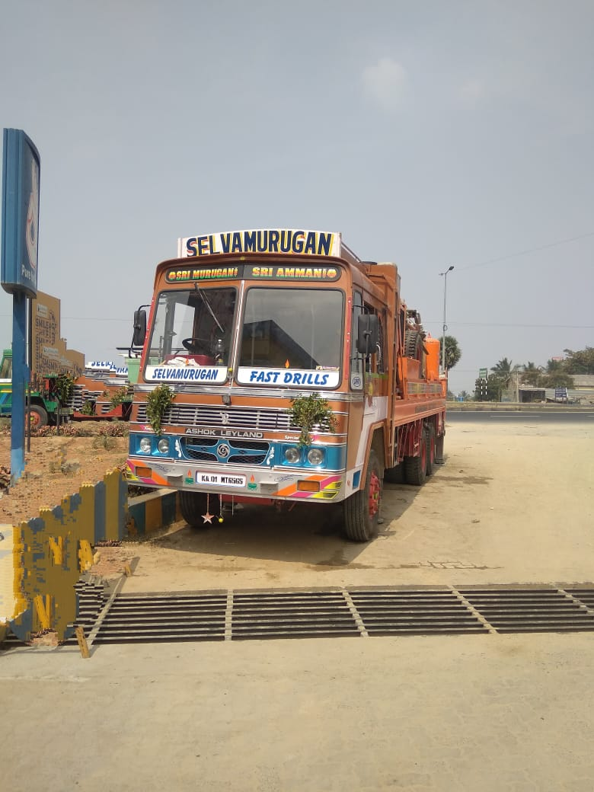

Karur Regional Information

Agricultural Areas
Karur includes agricultural regions where water sources can be important for farming activities and irrigation systems.

Industrial & Textile Areas
Karur is known for commercial and textile activities with developing infrastructure and business areas.

Residential Development
Growing residential developments and nearby villages continue increasing water requirements.